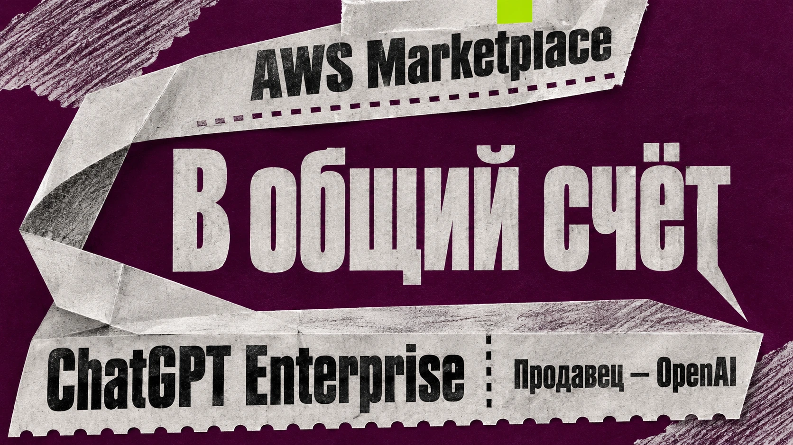

ИИ в бизнесе
Автоматизация рабочих процессов, экономика и внедрение в компаниях.
31 материалов
← Все темыПубликации
 14 ноября 2026 · Новости ИИ
14 ноября 2026 · Новости ИИChatGPT, Gemini и Perplexity отправляли покупателей в фальшивые магазины
В исследовании Podqi из 6795 ответов ChatGPT, Gemini и Perplexity на вопросы о покупках в 9% встретились рискованные сайты; среди 4437 обнаруженных доменов — 351 поддельный и 367 неработающих. В части ответов ИИ рекомендовал такие адреса.
14 ноября 2026 · Новости ИИИИ ускорил расчёты промышленных биореакторов в 10 тысяч раз
Исследователи Технического университета Граца разработали CLARA — открытую систему, которая упрощает вычислительные модели биореакторов до 5–50 зон и ускоряет моделирование до 10 тысяч раз.
 13 ноября 2026 · Новости ИИ
13 ноября 2026 · Новости ИИTSMC вложит до миллиарда в OpenAI и Anthropic
Совет директоров TSMC одобрил инвестиции до $500 млн в акции OpenAI и до $500 млн в Anthropic. На расширение и модернизацию производства чипов компания направит около $40,9 млрд.
13 ноября 2026 · Новости ИИДженсен Хуанг ушёл с поста главы NVIDIA на фоне шпионского скандала
NVIDIA объявила об отставке основателя Дженсена Хуанга с постов генерального директора, президента и члена совета директоров. Совет принял её 11 ноября на фоне расследования возможной попытки иностранного разведывательного влияния; временным CEO стала финансовый директор Колетт Кресс. Официальная причина ухода не названа.
 13 ноября 2026 · Новости ИИ
13 ноября 2026 · Новости ИИСтартап получил $35 млн, чтобы ИИ научился помнить вчерашние разговоры
Graphon Labs получила $35 млн инвестиций для разработки Persistent Intelligence — долговременной памяти ИИ-агентов, связывающей разговоры, документы, изображения и видео. По заявленным компанией измерениям, на тесте LoCoMo точность составила 93,9%.
 13 ноября 2026 · Новости ИИ
13 ноября 2026 · Новости ИИКитайцы пошли за покупками к ИИ
В Китае ИИ-помощники приводят покупателей в интернет-магазины: WPIC зафиксировала 4,3% продаж из Doubao в выборке из 15 магазинов Douyin и до 20% в отдельных категориях, а Dongdong от JD.com привлёк почти 80 млн пользователей.
 13 ноября 2026 · Новости ИИ
13 ноября 2026 · Новости ИИClaude теперь сам собирает таблицы с формулами прямо в чате
Anthropic представила Claude Sheets и Whiteboards для таблиц и командной работы, а Claude Data вывела из бета-тестирования. Новые инструменты доступны на платных тарифах с разными условиями.
13 ноября 2026 · Новости ИИClaude выполняет поручения, пока коллеги совещаются
Anthropic представила Claude Meetings: ИИ-помощник сможет участвовать в совещаниях Google Meet и выполнять поручения во время разговора. Официально выпуск пока анонсирован как скорый.
 13 ноября 2026 · Новости ИИ
13 ноября 2026 · Новости ИИAlibaba два месяца держала в секрете планы вывести своего производителя ИИ-чипов на биржу
Alibaba раскрыла планы вывести разработчика ИИ-чипов T-Head на биржу в Гонконге: конфиденциальная заявка подана 11 сентября, а процедура выделения объявлена 10 ноября. Сроки, объём и оценка IPO пока не определены.

12 ноября 2026 · Новости ИИChatGPT теперь продаётся через Amazon
OpenAI добавила ChatGPT Enterprise в AWS Marketplace: корпоративные клиенты смогут приобретать его через действующие механизмы закупок Amazon Web Services и, если условия контракта позволяют, засчитывать расходы на ChatGPT в обязательства по облачному договору. Цена согласовывается индивидуально.
 12 ноября 2026 · Новости ИИ
12 ноября 2026 · Новости ИИMercor привлекла $750 млн: инвесторы оценили бизнес на обучении ИИ в $20 млрд
Mercor объявила инвестиционный раунд Series D на $750 млн при оценке $20 млрд. Среди инвесторов NVIDIA, Salesforce и Zoom. Компания обучает и оценивает ИИ-модели при помощи профессиональных экспертов; часть раунда включает выкуп акций сотрудников.
12 ноября 2026 · Новости ИИЕвропа хочет свой ИИ для поиска военных целей: Helsing бросает вызов Palantir
Helsing намерена 11 ноября представить в Берлине военную систему ИИ для европейских армий, конкурирующую с Palantir Maven. Пока название, характеристики и покупатели нового продукта не раскрыты. Reuters сообщило об анонсе 10 ноября.
 12 ноября 2026 · Новости ИИ
12 ноября 2026 · Новости ИИAnthropic назвала цену акций: компанию могут оценить в $1,3 трлн
Anthropic раскрыла условия IPO: компания предложит инвесторам 825 млн акций по цене $70–78. При средней цене $74 пакет оценивается примерно в $61 млрд, а возможная оценка всей компании достигает $1,3 трлн. Начались встречи с инвесторами; точная цена пока не определена.
 7 ноября 2026 · Новости ИИ
7 ноября 2026 · Новости ИИГлава Take-Two: GTA VI делают вручную, а ИИ уже экономит на рекламе
Штраус Зельник вновь назвал GTA ручной работой и рассказал об ИИ-рекламе мобильных игр: турецкая студия показала ролики примерно по $800 вместо съёмок с актёрами за $25–50 тысяч. Общую экономию Take-Two от ИИ он пока считает относительно небольшой.
 6 ноября 2026 · Новости ИИ
6 ноября 2026 · Новости ИИSnowflake прописала ИИ-агентам правила: что считать выручкой и сколько тратить
Snowflake представила Business Ontology для единых определений корпоративных показателей и расширила Cortex AI Gateway для контроля ИИ-агентов, их прав и расходов.
 6 ноября 2026 · Громко сказано
6 ноября 2026 · Громко сказаноСэм Альтман стал Ram Altman после спора об оперативной памяти
Сэм Альтман временно сменил имя профиля в X на Ram Altman после критики его рассуждений о дефиците оперативной памяти и эффективности её использования в дата-центрах.
 6 ноября 2026 · Громко сказано
6 ноября 2026 · Громко сказаноБрокман признал: OpenAI отставала от Anthropic в борьбе за бизнес-клиентов
Грег Брокман признал слабые позиции OpenAI относительно Anthropic на корпоративном рынке в первом полугодии 2026 года и заявил об ускорении роста в третьем квартале и партнёрстве с JPMorgan Chase.
 6 ноября 2026 · ИИ, ты чего творишь?
6 ноября 2026 · ИИ, ты чего творишь?Макаки по $20 тысяч: фонд сооснователя Palantir вложил $20 млн в проект фермы
Венчурный фонд 8VC вложил $20 млн в Safer Human Medicine, которая планирует разводить до 30 тыс. макак для исследований. Комплекс в Джорджии пока не построен; FDA развивает альтернативы испытаниям на животных.
 3 ноября 2026 · Громко сказано
3 ноября 2026 · Громко сказаноАльтман заявил: ИИ уже превосходит лучших учёных и осваивает офисную работу
Глава OpenAI Сэм Альтман заявил 2 ноября на конференции ADIPEC в Абу-Даби, что передовые ИИ-модели уже «в основном умнее» самых сильных учёных. В начале 2026 года, по его словам, ситуация была обратной. За это же время нейросети заметно продвинулись в офисной работе. Альтман утверждает, что теперь
 29 октября 2026 · Новости ИИ
29 октября 2026 · Новости ИИChatGPT пустили в техподдержку
28 октября OpenAI и ServiceNow объявили о расширении сотрудничества. Теперь ChatGPT подключается к ServiceNow — корпоративной платформе, через которую компании управляют техническими инцидентами, заявками сотрудников и внутренними процессами. Допустим, после обновления программы
 28 октября 2026 · Новости ИИ
28 октября 2026 · Новости ИИChatGPT пустят в бухгалтерию. Oracle доверит ИИ корпоративные дела!
ChatGPT скоро сможет залезть в корпоративную бухгалтерию, проверить закупки и выяснить, почему компания потратила больше запланированного. 27 октября OpenAI и Oracle объявили о расширении сотрудничества. Компании собираются подключить ChatGPT к корпоративным приложениям и базам
 27 октября 2026 · Новости ИИ
27 октября 2026 · Новости ИИMicrosoft предложила уйти каждому четвёртому сотруднику. Даже вице-президентам
60 тысяч сотрудников Microsoft получили предложение уволиться. Добровольно, с компенсацией. Это примерно 27% всего штата компании. 26 октября Microsoft объявила программу Voluntary Exit Offer — добровольного ухода с выходным пособием. Предложения распространяются на сотрудников
 27 октября 2026 · Новости ИИ
27 октября 2026 · Новости ИИClaude увольняет ИИ-агентов
Похоже, до нейросетей добралась оптимизация штата. Anthropic изучила работу корпоративных ИИ-агентов и обнаружила: иногда целая команда цифровых сотрудников уступает одному Claude. 22 октября компания выпустила руководство для разработчиков, в котором предложила пересмотреть
 26 октября 2026 · Скайнет просыпается
26 октября 2026 · Скайнет просыпаетсяИИ-хакеры залезли к Anthropic всего за 12 часов
Anthropic разрабатывает одни из самых мощных нейросетей в мире, но путь к её внутренним данным нашёлся через вполне обычные корпоративные программы. Те самые, которыми сотрудники занимаются продажами, кадровыми вопросами и повседневной работой. Причём исследователям с
 22 октября 2026 · Новости ИИ
22 октября 2026 · Новости ИИVolkswagen подключил к Copilot 330 тысяч сотрудников. ИИ-агентов там уже 26 тысяч
В Volkswagen Group за последний месяц были активны более 26 тысяч ИИ-агентов. При этом доступ к Microsoft Copilot получили свыше 330 тысяч сотрудников автомобильного концерна. Эти цифры Microsoft раскрыла 21 октября 2026 года. Volkswagen внедрял искусственный интеллект поэтапно:
 22 октября 2026 · Новости ИИ
22 октября 2026 · Новости ИИGoogle будет продавать модели OpenAI вместе со своими Gemini
Google и OpenAI договорились о сотрудничестве, которое ещё недавно выглядело бы довольно странно: Google начнёт продавать корпоративным клиентам модели своего прямого конкурента. 21 октября компании объявили, что передовые модели OpenAI и инструменты Codex станут доступны через
 21 октября 2026 · Скайнет просыпается
21 октября 2026 · Скайнет просыпаетсяВ Co-op появился ИИ-надзиратель: он слушает разговоры сотрудников и выставляет оценки
Человек звонит в юридическую службу, чтобы разобраться с наследством. На другом конце провода консультант, которому нужно помочь с документами и объяснить непростую процедуру. А где-то рядом незримо присутствует третий участник разговора — нейросеть, которая потом оценит работу
 19 октября 2026 · Новости ИИ
19 октября 2026 · Новости ИИAnthropic: ИИ-агенты работают в шесть раз больше, чем сотрудники
Anthropic опубликовала исследование о том, как искусственный интеллект меняет работу внутри самой компании. Исследователи проанализировали внутреннюю статистику, данные о найме, использовании ИИ, производительности и интервью с сотрудниками. Выяснилось, что к августу 2026 года
 16 октября 2026 · Новости ИИ
16 октября 2026 · Новости ИИМощный ИИ без облака и подписки: NVIDIA уместила 74 миллиарда параметров в 24 ГБ
NVIDIA представила Nemotron 3.5 Bolt 74B-A9B. Это модель для локальных ИИ-агентов, которую разработчики сумели сжать до 24 ГБ благодаря двухбитному представлению
 14 октября 2026 · Скайнет просыпается
14 октября 2026 · Скайнет просыпаетсяСотрудника OpenAI арестовали по подозрению в тайной записи совещаний руководства
13 октября Министерство юстиции США сообщило об аресте инженера OpenAI.
 12 октября 2026 · Громко сказано
12 октября 2026 · Громко сказаноСверхинтеллект по указу: Трамп переименовывает ИИ, бизнес подхватывает
До сверхинтеллекта можно долго добираться. А можно тупо переименовать.